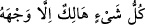
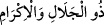
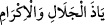

Sa’dî Müftî burayı izah ettiği haşiyede demiştir ki; bu âyet başka bir yöne de işâret
eder, buradaki “vech” kasd anlamındadır. Yâni, “Allah’ın kendisiyle niyet ve kasdettiği
şey” demektir. Cihetler (yönler) “maksadlar ve niyetler” anlamındadır. Bu ibarede bir
nevi kolaylaştırma vardır. İzafet (isim tamlaması) beyân içindir. Yâni “O’na yönelir”
demektir.
İbnü’ş-Şeyh demiştir ki; burada yüz anlamındaki vech kelimesinin yön anlamındaki
cihetten kinaye olması mümkündür.. Zira, her cihet’in kendisine yönelen bir yüzü vardır.
“Kişinin: Allah’a karşı aşırı gitmemden dolayı bana yazıklar olsun! Gerçekten ben
alay edenlerdenim (diyeceği günden sakın)” (ez-Zümer, 89/56) âyet-i kerîmesindeki
“cenbillah” lafzında zikredildiği gibi. Yâni “cin ve insanlardan her iki topluluk ve
kazandıkları amelleri yok olup gidecektir. Ancak, kendisiyle Allah’a yöneldikleri ve
O’nun rızâsını kazanmak için yaptıkları müstesnâ” demektir.
Şeyh b. Nureddin (rh.a)demiştir ki; mâhiyetler üç kısma ayrılır; Vâcibü’l-vucûd,
(olması zorunlu olan) mümteniu’l-vucûd (olması mümkün olmayan) ve mümkinü’l-
vucûd (olup olmaması câiz ve mümkün olan). Vâcib olan vucûd, varlığın kendisidir
(Allah). Mümteni, yokluktur. Mümkün ise her ikisinden oluşmuştur; olabilir veya
olmayabilir. Çünkü mümkün’ün varlığı üzerinde sonradan gelen bir varlık ve mahiyeti
vardır. Bu sebeple mümkün’ün mahiyeti itibarî olup hariçte varlık kabul etmez. Böyle
olunca mümkün yokluk ve varlıktan yaratılmış bir varlık olur. Bu topluluk, yokluk ve
varlığı bu sebeple kabul etmektedir.
Bu açıklamadan Kâdî Beydâvî’nin, “varlıkları araştırıp incelersen hadd-i zâtında
hepsinin fânî olduğunu görürsün” sözünün anlamı ve Şeyh-i Ekber “Allah ile birlikte
başka bir tanrıya tapıp yalvarma! O’ndan başka tanrı yoktur. O’nun zâtından başka
her şey yok olacaktır. Hüküm O’nundur ve siz yalnız O’na döndürüleceksiniz.” (el-
Kasas, 28/88) âyet-i kerîmesini açıklarken “__WORD__ deki zamir (şey’e)
racidir diyerek yaptığı tefsirin anlamı ortaya çıkmıştır.
Âyet-i kerîmede geçen “__WORD__ lafzı “vech” lafzının sıfatıdır. Yâni, “mutlak
mânâda varlık ve zenginlik sâhibi veya Zât ve sıfatlarında azamet ve sonsuz kerem
sâhibi” demektir. Bu da Allah’ın yüce sıfatlarındandır. Peygamber (s.a.): “__WORD__” demeğe devam ediniz”[171] buyurmuştur.
Peygamberimiz (s.a.)’, namaz kılıp: “Yâ ze’l-celâli ve’l-ikrâm” demekte olan bir
adamın yanından geçti ve “Senin duân kabul edildi.” buyurdu. Bu sebeple bu iki
kelimeyle yapılan duânın makbul olması umulur.
Allah Teâlâ’nın Bâkî, diğer bütün yaratılmışların fânî olduğu belirtildikten sonra bu
lâfızlarla sıfatlanması, yaratılmış olan varlıklar yok olduktan sonra onların üzerine
Allah’ın lütuf ve keremini akıtacağını bildirmektir. Nitekim gelecek âyet-i kerîmede bu
haber verilmektedir.